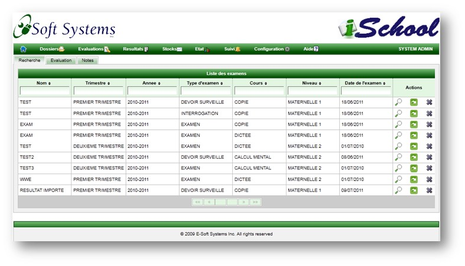

Les notes sont saisie manuellement ou importee a partir des resultats de test.
La page de test contient trois classeurs: la liste des examens, la page de creation d'examen, et la page de saisie de notes.
Liste des examens
Une recherche multi criteres permet de filtrer les examens et d'en selectionner un afin d'en afficher la liste d'etudiants et leur notes respective.
Un click sur l'icone de fleche permet d'importer les notes des tests.

Importation des notes de test en ligne
Cette page permet de selectionner un test et d'en importer les resultats.
Creation/Modification d'une evaluation
Cette page permet de specifier le type d'examen, le trimestre, l'annee, la matiere, la classe et le pourcentage que represente la note par rapport a la note finale.
La some des pourcentage de toutes les note doit etre egale a 100%.
Une note est soit, une note de classe ou une note d'examen. La case a cocher "Publier" permet de rendre les resultats visibles aux eleves.
L'icone circulaire en bas en droite de la page apparait lorsque le professeur dispensant le cours se connecte. Il permet d'approuver toutes les notes en meme temps.
Liste de notes
En fonction de la page classe et l'annee selectionnee, la liste des etudiants est automatiquement constituee permettant de saisir les notes.
En fonction de la plage a laquelle la note appartient, l'appreciation est automatiquement renseignee.
Saisie de notes
Un click sur l'icone de loupe permet d'afficher une petite fenetre permettant de saisir ou de modifier la note. L'image de l'etudiant est affichee afin de confirmer son identite.
Une note modifie est sujette a une approbation.
Saisie de notes: confirmation de l'approbation d'une note.
Saisie de notes: confirmation de l'approbation de toutes les notes.
Copyright © 2011, E-Soft Systems Inc